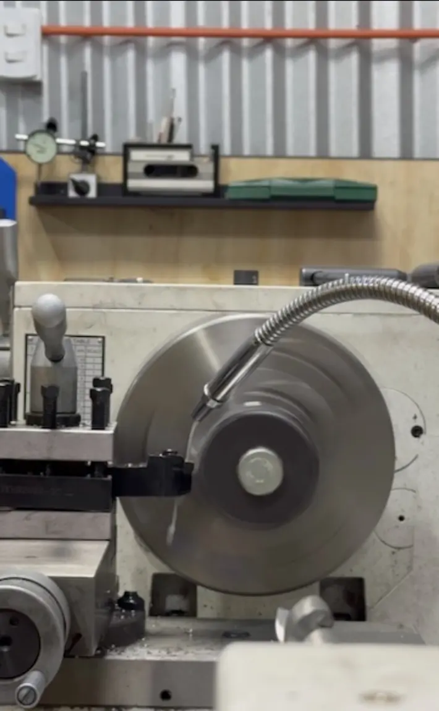
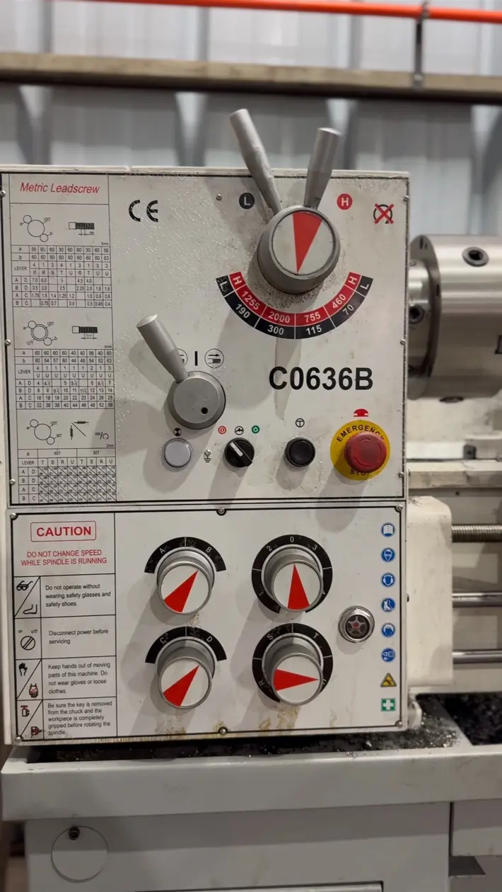
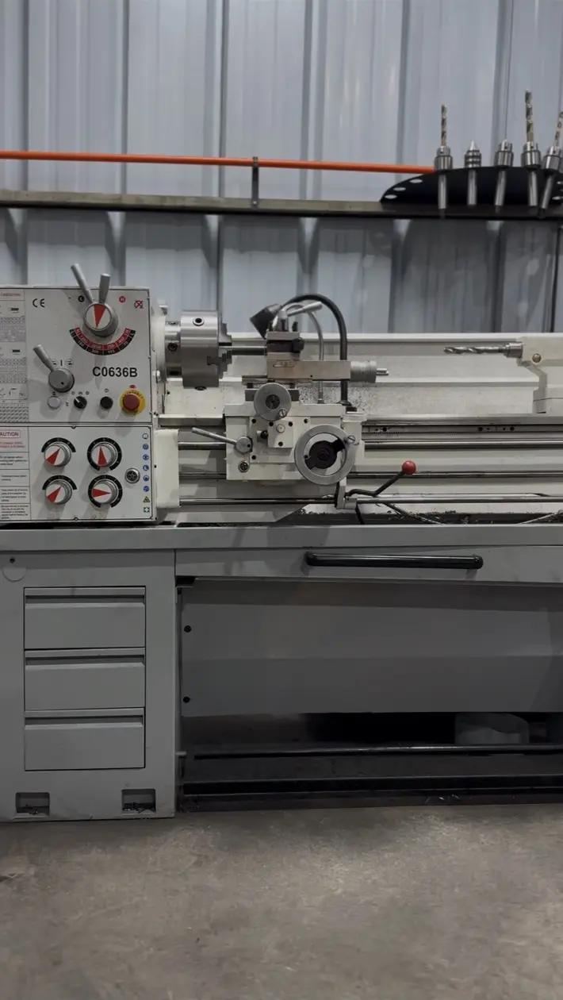

Mecanizado y torneado
Cilindrado de piezas en torno convencional
Transformación del perfil exterior de piezas metálicas mediante giro controlado, avance de la herramienta de corte y lubricación hasta obtener una geometría cilíndrica.






Caso documentado
Necesidad, equipos y resultado
- Necesidad
- Convertir un perfil inicial en una geometría cilíndrica controlada.
- Equipos
- Torno convencional C0636B y sistema de lubricación.
- Resultado
- Diámetro exterior mecanizado y terminación uniforme.
Proceso ejecutado
- Recepción de la pieza preparada en la etapa de corte
- Montaje y sujeción del perfil en el plato del torno
- Giro, lubricación y avance controlado de la herramienta
- Terminación cilíndrica del diámetro exterior